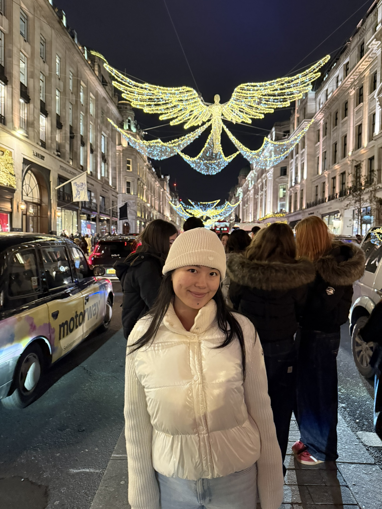

2021 - 2025
King's College London
PhD, AI for Medical Imaging. EPSRC-funded Smart Medical Imaging CDT.

AI for medical imaging / computer vision / surgical AI
I am a PhD researcher in AI for Medical Imaging at King's College London, working on data-efficient learning, vision-language models, and surgical instrument understanding.
My research develops deep learning methods for challenging medical imaging settings, including surgical scene parsing, weak and semi-supervised learning, foundation model adaptation, and language-guided video segmentation.

Meng Wei, et al.
Meng Wei, et al.
Meng Wei, et al.
Meng Wei, et al.
Zijian Zhou, Meng Wei, et al.
Meng Wei, et al.
PhD, AI for Medical Imaging. EPSRC-funded Smart Medical Imaging CDT.
MRes, Artificial Intelligence and Machine Learning. Distinction.
BEng, Electrical Engineering. First-class honours.
Worked on 3D vision for seismic imaging, synthetic data generation, and AI-assisted geoscience workflows.
Developed deep learning methods for hemorrhagic stroke detection and segmentation on CT images.